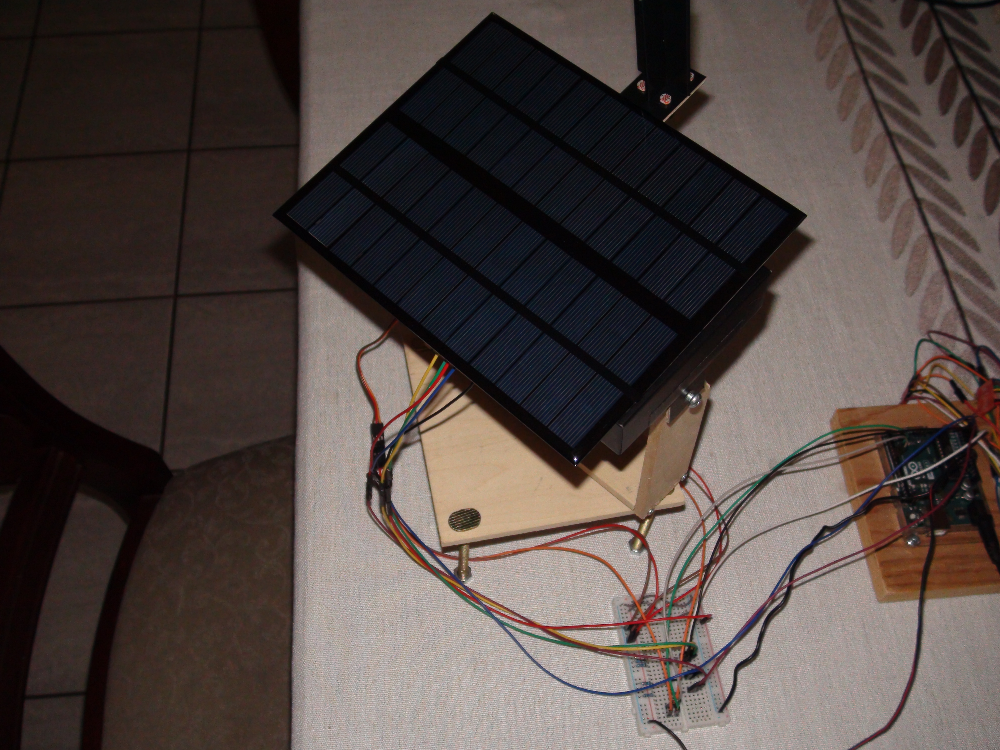
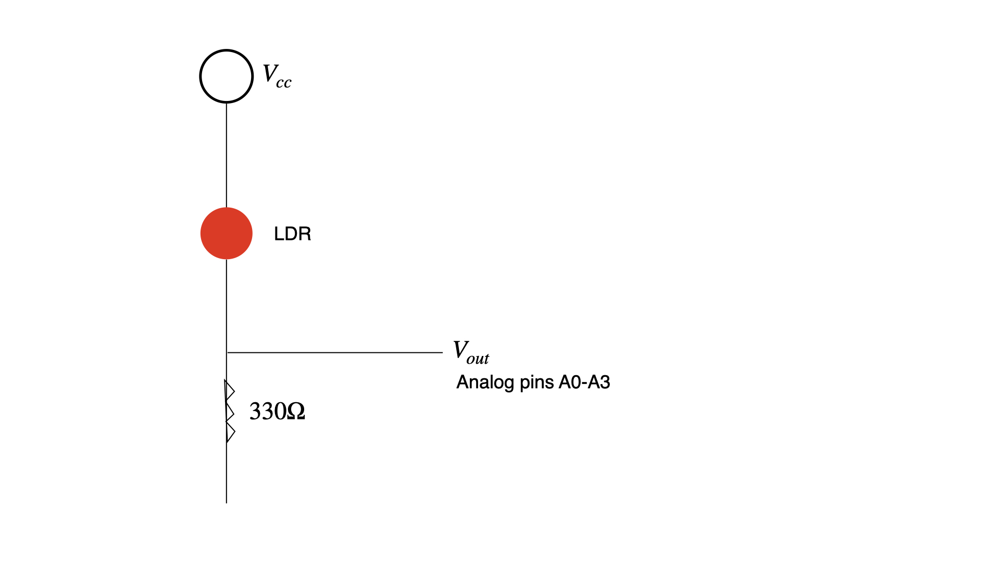
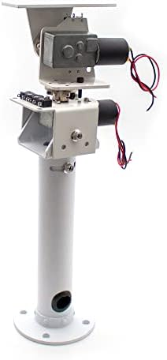
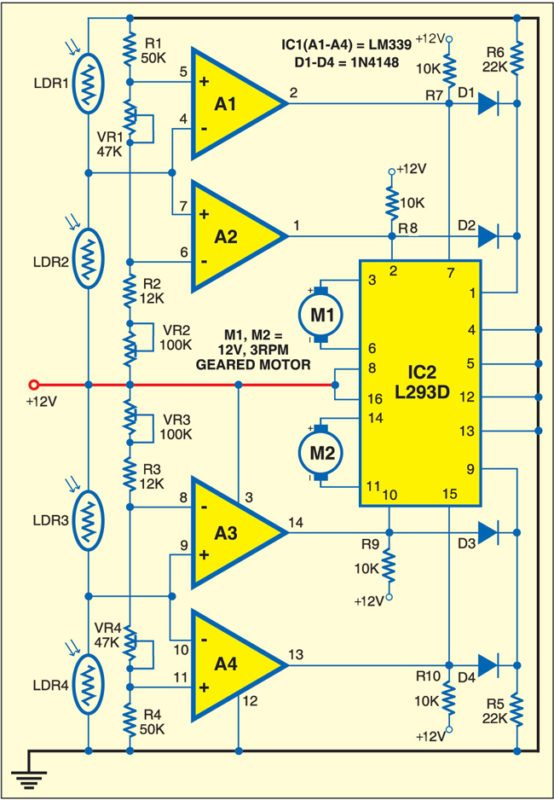

The initial design for this project is based off of Aboubakr_Elhammoumi's solar tracker, which can be found here. However, there are key differences in the way that this project is designed, as we do not have access to 3-D printers or CNC machines.
Below, you can see the apparatus that my father and I made for this solar tracker.

NOTE: The solar panel shown in this image is a much smaller 12V 300mA (3.6W) panel, which does not provide nearly as much energy as the 20W panel.
As you can see, there are wooden planks supporting the solar tracker, which allow the tracker to rotate freely up to 180 degrees to track the sun's position. However, very quickly into testing, we realized that the servo motors do not provide enough torque to lift the 20W solar panel that we bought, thus we ended up abandoning this design.
Specifically, the 20W solar panel weighed 1.36 kg, meaning that when it is attached to the rotating arm, the SG90 (which has a maximum stall torque of 1.8 kgf·cm) is unable to generate enough torque to move the solar panel and rotational apparatus (which has a torque of 3.4 kgf·cm).
We then bought a much smaller solar panel that would operate at 12V 300mA, so that it could be mounted on this tracker apparatus. This does not produce enough energy, though, as during testing, we discovered that in order to hold the solar panel in place, the vertical servo motor must constantly provide a large amount of current (sometimes up to 400 mA when the solar panel is low enough). This makes this apparatus far too inefficient for practical purposes.
The circuit itself contains four voltage dividers, allowing for the Arduino to gauge the voltage readings of each sensor.

Below is a demonstration of the solar tracker in action with a flashlight simulating sunlight.
Since our original apparatus was too inefficient for practical purposes, we decided to find another apparatus that could hold our solar panel.
We bought this gimbal off of Amazon, which contained two wormgear motors attached to a steel rotating apparatus. Four limit sensors are installed in each direction of rotation. This gimbal was perfect for our project, as it had a maximum load of 5 kg for 12V DC, which was enough to accomodate our 1.36 kg solar panel.

There are three main components of this solar tracker system: the voltage regulator, microcontroller, and the motors themselves. The Arduino's microcontroller performs most of the work, controlling when and how the two wormgear motors move based on the readings of the four photoresistors.
Below is a circuit diagram that most nearly represents the circuit that we built, minus the comparators and potentiometers, which were substituted for the Arduino's analog/digital pins.

Sped up video recording of solar tracker from 9:00 AM to 5:00 PM
Essentially, the code can be broken down into two main parts: the initialization and the tracking. The initialization portion is executed once: when the Arduino first receives power (either through the USB port or the DC jack). It sends a HIGH signal (equivalent to a binary 1) to digital pin 10 and a LOW signal (equivalent to a binary 0) to pin 11, which causes the vertical motor to turn upward. The motor continues to turn upward until it reaches a vertical limit sensor wired to pin 8, in which a LOW signal is sent to that pin, stopping the motor (by sending a LOW signal to both pins) and reversing the direction of the motor for 5 seconds (by swapping the HIGH and LOW signals sent to pins 10 and 11). The horizontal motor then activates and continues turning until it reaches a horizontal limit sensor, which then causes the motor to reverse direction for 2 seconds before stopping. At this point, the initialization sequence has concluded.
As the sun moves, the sensor readings will become imbalanced. The Arduino will compare the top/bottom and left/right readings, and once the difference in readings exceeds a pre-set threshold, the Arduino will send HIGH/LOW signals to the appropriate pins in order to move the solar tracker such that it is perpendicular to the sun.
For example, when the top sensor receives more light than the bottom, the Arduino sends a HIGH signal to pin 10 and a LOW signal to pin 11, as highlighted by the following code block:
if (diffazi >= threshold_value && digitalRead(8) == HIGH) { // ensures limit sensor has not been activated AND compares the difference in readings to a set threshold
// moves solar panel up
digitalWrite(10, HIGH);
digitalWrite(11, LOW);
} else if (abs(diffazi) >= threshold_value && diffazi < 0 && digitalRead(9) == HIGH) { // if above condition was not met, then the absolute value of the difference is compared to the threshold value
// moves solar panel down
digitalWrite(10, LOW);
digitalWrite(11, HIGH);
} else {
stopVertical(); // sends LOW signal to both pins 10 and 11 to stop the vertical movement
}
The same concept applies for the left/right sensors with pins 12 and 13.
One of the most crucial issues concerning this project is power management, specifically reducing power consumption and implementing a way for the solar panel to charge the battery while it powers the solar tracking circuit. This is NOT a trivial issue, as it requires calculations and careful hardware engineering to correctly implement everything.
We bought a power supply unit, which allowed us to control the voltage outputted to the solar tracking circuit using a potentiometer. More importantly, this unit contains an enable/disable pin on the LM2596 chip as shown below, which allows us to turn on/off the circuit when a LOW signal is sent to it.

In order to trigger the enable/disable pin depending on ambient light, we used another light sensor installed inside a Schmitt Trigger circuit, which prevents the solar tracker from turning on/off repeatedly when the light is just at the threshold. A diagram of the circuit can be seen below.

How much energy will this solar tracker produce? After all, increased energy production is the SOLE REASON for building a solar tracker.
It is not simple to compare the efficiency of the two charging methods: charging while flat and while the solar tracker is operating. As you can see below, it is impossible to compare energy savings based on voltage levels alone.

Thus, we have decided to put a load on the solar panel (through the use of an inverter and a lamp drawing 1 A), so that if the solar panel does not provide enough current to run the circuit (bundled with the additional load), then the battery will provide the necessary current to run the circuit. The goal with the solar tracker is to minimize the amount of battery usage by placing the solar panel in a position such that it can provide its maximum current. By performing this test, we can directly compare the battery usage between the two charging methods in order to determine how much energy is saved by using the solar tracker. The test was performed over the course of several days from July 22-30.

| Time of Day | Fixed at 29 Degrees | Single Axis | Dual Axis |
|---|---|---|---|
| 6:45 AM | 0.005 | 0.23 | 0.35 |
| 7:15 AM | 0.03 | 0.5 | 0.55 |
| 7:45 AM | 0.13 | 0.67 | 0.74 |
| 8:15 AM | 0.23 | 0.77 | 0.84 |
| 8:45 AM | 0.37 | 0.85 | 0.86 |
| 9:15 AM | 0.49 | 0.89 | 0.9 |
| 9:45 AM | 0.6 | 0.94 | 0.93 |
| 10:15 AM | 0.7 | 0.96 | 0.96 |
| 10:45 AM | 0.8 | 0.98 | 0.99 |
| 11:15 AM | 0.87 | 1 | 1 |
| 11:45 AM | 0.93 | 1 | 1.02 |
| 12:15 PM | 0.98 | 0.99 | 1.03 |
| 12:45 PM | 0.99 | 0.98 | 1.03 |
| 1:15 PM | 0.99 | 0.99 | 1.03 |
| 1:45 PM | 0.97 | 0.99 | 1.02 |
| 2:15 PM | 0.93 | 1 | 1.01 |
| 2:45 PM | 0.88 | 0.99 | 0.97 |
| 3:15 PM | 0.83 | 0.98 | 0.97 |
| 3:45 PM | 0.75 | 0.95 | 0.95 |
| 4:15 PM | 0.64 | 0.93 | 0.92 |
| 4:45 PM | 0.53 | 0.89 | 0.88 |
| 5:15 PM | 0.36 | 0.89 | 0.86 |
| 5:45 PM | 0.28 | 0.84 | 0.87 |
| 6:15 PM | 0.16 | 0.74 | 0.78 |
| 6:45 PM | 0.05 | 0.6 | 0.62 |
| 7:15 PM | 0.01 | 0.3 | 0.41 |
The graph above illustrates the current (in A) produced by the solar panel, measured at 30 minute intervals. We used a power meter, which logs the voltage of the battery, along with the current draw. By subtracting the known load we placed (which consisted of a lamp and an inverter) by the current drawn shown on the power meter, we obtain the amount of current produced by the solar panel.
Using a midpoint Riemann sum to approximate the total energy produced by the solar panel in both conditions, we discover that the solar panel in the fixed position produced 7.249 Ah from 6:45 AM to 6:15 PM compared to 11.06 Ah when the solar tracker is enabled. This means that the solar tracker causes the solar panel to produce 52.6% more energy compared to when it is mounted in a fixed position, optimal for the entire year.
In addition, we can also factor in additional circumstances such as the tracker operating on only the vertical axis (essentially a single axis tracker, which is more cost-efficient). The solar panel, operating with only a single axis tracker, produced 10.79 Ah, which is very close to the dual axis tracker's energy production.